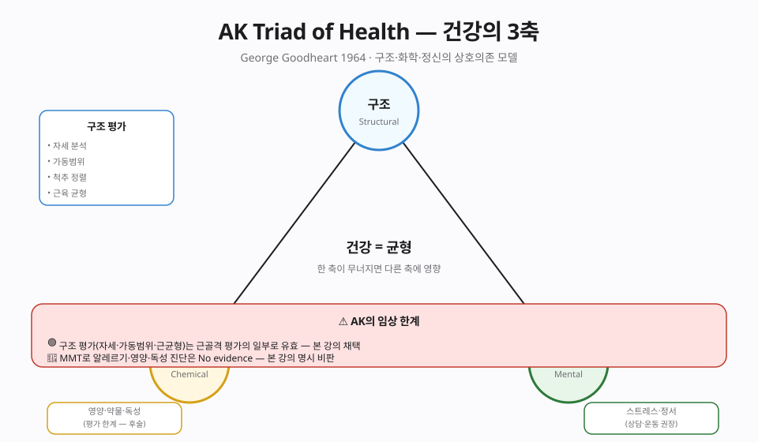
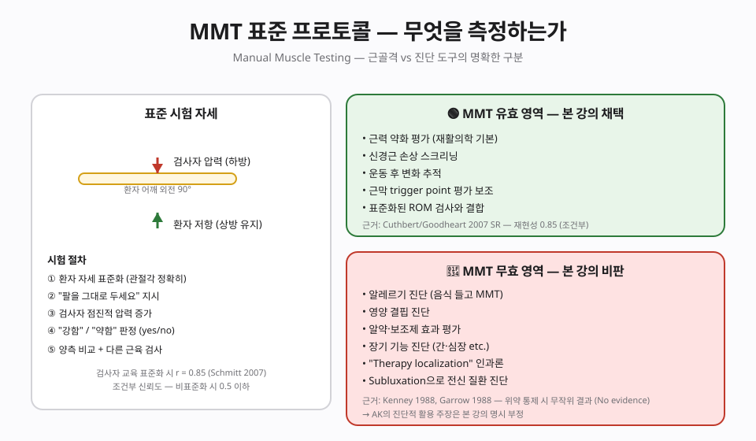
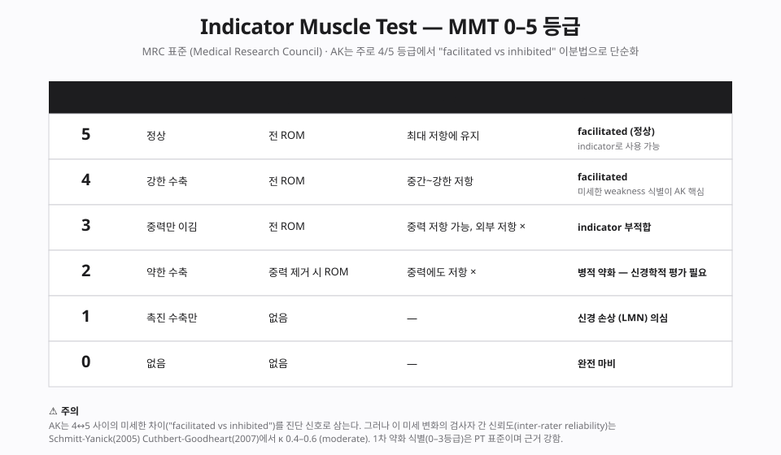
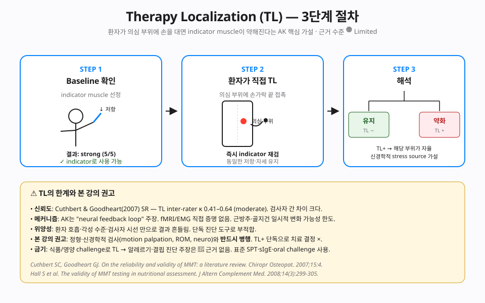
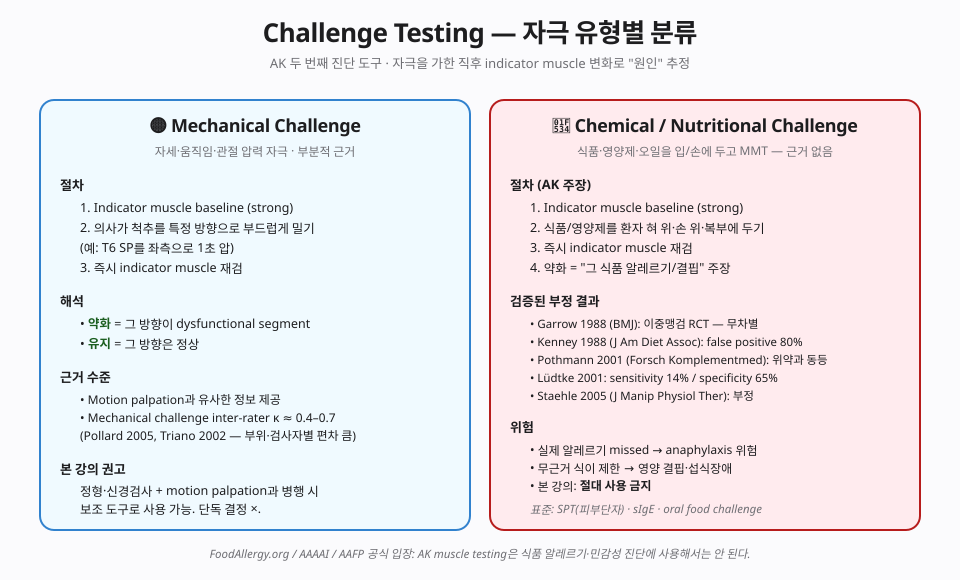
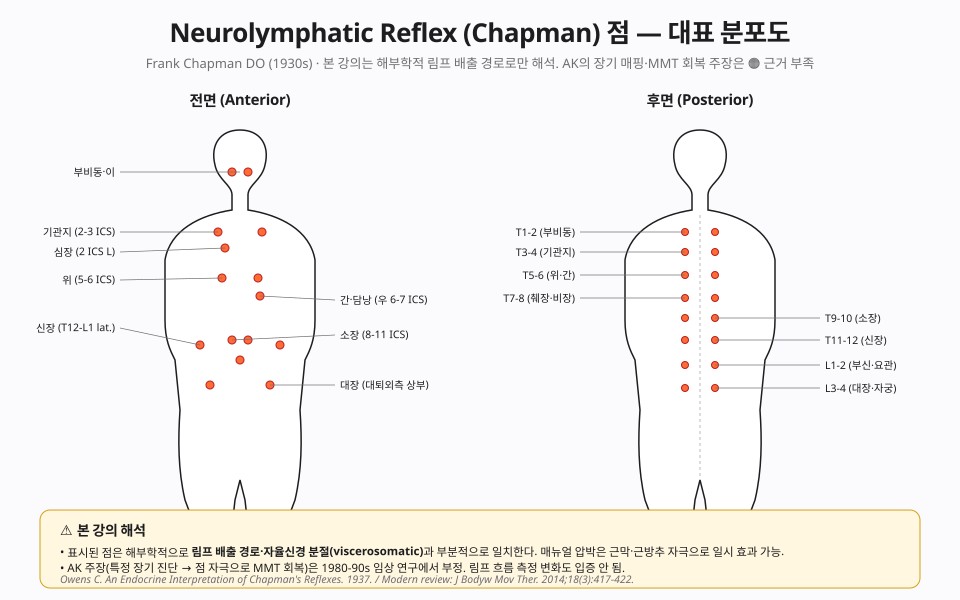
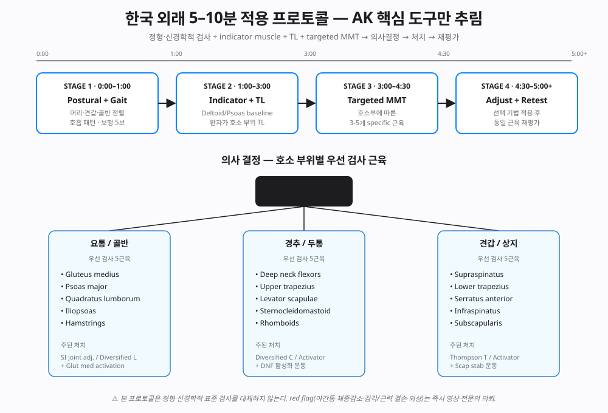

📊 핵심 다이어그램 (7종)
진단 11종 · 현대 응용 · 5분 프로토콜을 시각화한 도식.







📘 편집 원칙
근거 기반 의학(EBM) 관점. Vitalism · 전신질환 인과론 · AK 진단 확장 · Cranial rhythm 등 근거 부족·부정적 RCT 주장은 🟠 Limited / 🔴 No evidence로 명시하고 임상 적용에서 제외 또는 비판적으로 언급합니다.
개요
본 챕터가 다루는 기법
George Goodheart가 1964년 창시. Manual Muscle Testing(MMT)과 IVF factors(nerve·neurolymphatic/Chapman·neurovascular/Bennett·CSF). 한국 임상에서도 일부 DC·PT가 수용.
근거 수준 한눈에
근거
🟡 MMT 자체 / 🔴 AK 확장 진단 주장
이론·기전
George Goodheart (1964) DC의 핵심 가설: 신체의 stress(구조·화학·정신)가 motor control center를 통해 indicator muscle 출력에 반영된다. Chapter 2 FN의 Aff/Def/Eff 프레임으로 해석하면 → MMT는 efferent output을 보는 검사이며, AK는 그 출력 변화로부터 afferent input의 이상을 역추적하려는 시도.
본 강의의 평가 — 무엇이 살아남고 무엇이 사라지나
1차 약화 식별(MMT 0-3등급)은 PT 표준이며 근거가 강합니다. AK 핵심인 4↔5 미세 변화 식별은 검사자 간 신뢰도 κ 0.4-0.6 (moderate). "weak muscle → 알레르기·장기 진단" 해석은 현재까지의 연구로 일관된 뒷받침을 얻지 못한 상태입니다. 본 챕터는 AK 도구 11종을 분리해 각각의 근거 수준을 정리합니다. 인체와 신경 시스템에 대해 우리가 아는 것은 여전히 한정적이므로, 단정보다는 현재 시점의 근거를 바탕으로 한 권고형 서술을 따릅니다.
진단 도구 11종 상세
AK 임상가가 사용한다고 주장하는 11개 도구의 절차·가설·근거·본 강의 입장.
| # | 진단 도구 | 가설 / 절차 핵심 | 근거 | 본 강의 입장 |
|---|---|---|---|---|
| 1 | MMT Indicator | 표준 자세 + 4초 저항 · facilitated/inhibited 이분 | 🟡 Moderate | 표준 14근육 routine 가능 |
| 2 | Therapy Localization (TL) | 환자가 의심 부위 손가락 접촉 → indicator 재검 | 🟠 Limited | 표준 검사와 병행 시 보조 |
| 3a | Mechanical Challenge | 척추를 특정 방향 1초 push → 즉시 재검 | 🟡 Moderate | motion palpation과 병용 가능 |
| 3b | Chemical Challenge | 식품·영양제를 입/손에 두고 재검 | 🟠 다수 RCT 부정적 | 현재 임상 적용을 권장하기 어려움 |
| 4 | Triad of Health | 구조·화학·정신 균형 평가 · 영역별 자극 회복 측정 | 🟡 개념 OK | 면담 프레임으로만 (진단 ×) |
| 5 | 5 Factors of IVF | nerve · NL · NV · CSF · nutrition (meridian 명시 제외) | 🟠 대부분 부정 | 비과학적 진단 항목은 본 강의 제외 |
| 6 | Origin/Insertion Tech | 근육 부착부 deep digital pressure 5-10초 | 🟡 myofascial과 유사 | 보조 도구 가능 |
| 7 | Neurolymphatic (Chapman) | 전·후면 림프점 deep rotary rub 20-30초 | 🟠 림프 ×, 근막 ○ | 해부학 압박 효과만 인정 |
| 8 | Neurovascular (Bennett) | 두피·전두점 극경 압력 30s-5분 | 🟠 임상 의미 미입증 | 현재 권장하지 않음 |
| 9 | Spinal/Cranial Listing 진단 | MMT 결과로 척추 listing·cranial fault 추정 | 🟠 cranial κ 부정적 | 표준 motion palp·X-ray로 대체 |
| 10 | Nutrition/Oral Provocation | 식품·영양제를 입/혀에 두고 MMT → 알레르기·결핍 진단 | 🟠 RCT 부정적 | 현재 임상 적용을 권장하기 어려움 |
| 11 | Switching / Cross-crawl | "polarity 뒤집힘" reset · 좌우 교대 운동으로 hemispheric 통합 | 🔴 No evidence | 현재 권장하지 않음 |
🟢 Strong · 🟡 Moderate · 🟠 Limited · 🔴 No / Negative evidence · 각 도구의 상세 절차·연구 근거·임상 한계는 📖 강의록 §진단 11종 참조.
⚠️ 현재 임상 적용을 권장하기 어려운 도구 (요약)
- Chemical/Oral Challenge — 식품·영양제·약물을 입/손에 두고 MMT → 알레르기·결핍 진단 주장. Garrow 1988 (BMJ), Kenney 1988 (false positive 80%), Pothmann 2001, Lüdtke 2001 (sensitivity 14%/specificity 65%), Staehle 2005 모두 부정적 결과. 실제 알레르기를 놓칠 경우 anaphylaxis 위험이 있으므로 표준 검사를 우선 권합니다.
- Nutrition/Oral Provocation — 같은 기전이며 현재 효과 입증이 부족합니다. 표준은 SPT(피부단자) · sIgE · oral food challenge.
- Switching/Cross-crawl — "polarity reset" 가설은 현재 측정이 어렵고, 메커니즘이 아직 충분히 설명되지 않았습니다.
위 도구들은 현재 시점의 근거를 바탕으로 권장하지 않는 것이며, 향후 새로운 연구로 평가가 달라질 가능성은 열어둡니다.
🔧 치료 — Part III
진단 → 처치 → 즉시 재검이 핵심 사이클. 본 강의는 AK 처치 도구를 근거 수준별로 분리해, 🟡 myofascial / motor learning에 부합하는 것은 채택, 🟠 근거 부족한 것은 보조로만, ⚠️ 다수 RCT 부정적인 것은 권장하지 않음으로 정리합니다.
치료 의사결정 트리
핵심 sequence — Diagnosis · Treatment · Re-test
- 진단 — MMT baseline + Postural screen + TL → Red Flag 확인 시 즉시 표준 검사 의뢰
- 분류 — 척추 분절 dysfunction? · 근육 자체 약화? · compensator 패턴? · 호흡·비대칭?
- 처치 선택 — D(척추 교정) · A(O/I·Spindle·GTO) · C(NKT) · E(PRI) 중 1-2개
- 즉시 재검 — 동일 근육 MMT → 1 grade 이상 회복 확인
- Home exercise — motor pattern 재학습을 위한 1-2개 운동 처방 (필수)
TL+ 단독으로 치료 결정 ×. motion palp · neuro exam · 영상 우선. 처치 후 효과 없으면 다음 도구로.
A. 근육 활성화 기법 — O/I · Spindle · GTO 🟡 Moderate
근방추(spindle)는 근육 길이를, 골지건 기관(GTO)은 장력을 CNS로 보냅니다. 두 receptor의 신경생리를 활용해 weak/over-active 근육을 normalize.
A-1. Origin/Insertion Technique (O/I)
근거 🟡 Hains 2002 · Cagnie 2013 (trigger point release 단기 통증 감소·ROM 증가 RCT). myofascial release / ischemic compression과 메커니즘 부분 일치.
주의: 골다공증·암 의심·급성 부착부 손상 시 압박 강도 감량.
🎥 TFL release with sustained pressure — O/I 압박 시연 (lateral hip pain)
A-2. Spindle Pinch — 근방추 자극
근방추는 belly에 분포 · 근육 길이 신호를 보냅니다. 압축 = "이미 짧다" 신호 → afferent ↓ → 약화 / 신장 = "길어졌다" → afferent ↑ → facilitation.
근거 🟡 근방추 신경생리 기전(Sherrington 1906) plausible. 임상 효과는 단기·국소.
A-3. GTO Release — Golgi 건 기관
GTO는 muscle-tendon junction에 분포 · 장력 신호 · 강한 신장 신호 → autogenic inhibition (Ib reflex).
근거 🟡 Ib reflex 기전 plausible. Sherrington 원전 신경생리.
| 상황 | 1차 선택 |
|---|---|
| 부착부 tender + ROM 제한 | A-1 O/I 압박 |
| 부착부 OK · 근육 약화 | A-2 Spindle pull-apart (activation) |
| 근육 과긴장 · 통증 | A-3 GTO bone-ward stretch (inhibition) |
🎥 AK Every Muscle MMT 종합 시연 — 표준 자세·저항 방향·grading 검토 (전신)
🎥 표준 MMT 0-5 grading — 재활의학 기초 (AK MMT와 비교 학습용)
B. 반사점 자극 — Chapman (NL) · Bennett (NV)
B-1. Chapman Neurolymphatic Reflex (NL) 🟠 림프 ×, 압박 효과 🟡
근거 🟠 1980-90 연구에서 림프 흐름·장기 기능 변화 입증 ×. 점 위치는 viscerosomatic·myofascial trigger point와 부분 일치. "장기 진단" 주장 ×, 압박 자극의 myofascial 효과만 보조 도구로 인정.
🎥 Chapman 신경림프 반사점 rotary rub 시연 — 본 강의는 "장기 진단"이 아닌 압박 자극 효과로만 활용 권장
B-2. Bennett Neurovascular Reflex (NV) 🟠 권장하지 않음
문제점: 두피 동맥 박동 변화의 임상 의미 미입증 · inter-rater reliability 미평가 · peer-reviewed 1차 근거 사실상 부족. 본 강의는 현재 권장하지 않습니다 (가벼운 접촉의 일반 relaxation effect는 별개 평가).
C. NKT — Pin-and-Move Release Sequence 🟡 motor learning
NeuroKinetic Therapy (David Weinstock, 2007) — compensation 패턴 해소
만성 통증의 흔한 원인은 compensator muscle이 잘못 facilitated되어 prime mover가 inhibited 상태로 굳어진 패턴. AK MMT 직계 발전형으로 motor learning theory에 부합.
근거 🟡 Sherrington reciprocal inhibition + cortical motor patterning에 plausible. 대조 RCT 부족 — 사례 보고와 임상가 경험이 주. AK MMT보다 학술 base 강함.
본 강의 권장: 만성 motor pattern 문제(요통 chronic · scapular dyskinesis · recurrent ankle sprain)에서 1차 도구.
🎥 NKT 공식 교육 자료: NeuroKinetic Therapy Courses ↗ (David Weinstock 공식 채널)
D. AK-style 척추 교정 — Challenge-driven Vector 🟡 보조
표준 척추 교정에 AK가 더하는 요소 — Mechanical Challenge
표준 chiropractic은 listing을 motion palpation + X-ray + static palpation으로 결정. AK는 여기에 6 방향 Challenge → MMT 변화라는 추가 정보 제공.
근거 🟠 Mechanical Challenge κ 0.4-0.7 (Pollard 2005, Triano 2002) moderate. 표준 motion palp 대비 추가 진단 가치는 미입증. 교정 효과 자체는 표준 chiropractic 근거에 의존.
본 강의 권장: AK Challenge는 motion palp의 보조로만. Listing 결정은 X-ray + motion palp 우선.
E. PRI — 호흡·자세 재조정 🟡 lumbopelvic 일부 RCT 양성
Postural Restoration (Ron Hruska, 1989) — 좌측 AIC 패턴 교정
인간 신체의 좌우 비대칭(간 우·심장 좌·횡격막 좌·우 dome 다름)이 좌측 AIC 패턴을 유발 → 만성 lumbopelvic 통증·호흡 부전.
대표 평가
- Adduction Drop Test — supine, hip 90° flex·90° abduct → adduct ROM. 좌우 차이 >5° = AIC pattern.
- Hruska Abduction Lift Test — 측와위 abduct lift hold · 좌우 비교
- ZOA (Zone of Apposition) 호흡 평가 — 늑골 하부·횡격막 vertical alignment
90-90 Hip Lift 처치 sequence
근거 🟡 Boyle 2010 · Skoglund 2011 — lumbopelvic 통증·만성 호흡 부전 일부 RCT 양성. PT 교육 표준 일부 통합.
F. Cranial / TMJ AK — 현재 적용 한계 🟠 한정
Cranial AK 주장과 본 강의 평가
- AK 주장: 가벼운 압력(2-3 g)으로 두개골 봉합 motion 교정
- 본 강의 평가 🟠 권장하지 않음: 두개골 motion은 미세 가능하나 임상가가 손으로 진단할 수 있다는 inter-rater κ < 0.2 (SOT Ch 10 참조). 교정 효과 RCT 거의 없음.
TMJ AK — Set Point Technique
- 외측 익돌근 rub + acupoint(ST-1, LI-20) tap 30-45초 → jaw ROM 재검
- 본 강의 평가: 외측 익돌근 myofascial release는 🟡 plausible. Acupoint tap 추가 효과는 미입증. Dental occlusal evaluation · splint therapy 우선.
G. 5 Factors → 처치 매핑 매트릭스
| 5 Factor | AK 진단 신호 | AK 처치 주장 | 본 강의 권장 |
|---|---|---|---|
| Nerve | 분절 dysfunction MMT change | HVLA · Activator | 🟢 표준 교정 (Ch 3·6·7) |
| Neurolymphatic | Chapman 점 tender | rotary rub 20-60s | 🟡 압박 자극만 |
| Neurovascular | 두피 Bennett 점 | 가벼운 hold 20-30s | 🟠 권장하지 않음 |
| CSF / Cranial | cranial fault MMT | gentle correction | 🟠 권장하지 않음 |
| Nutrition | oral challenge weak | 영양제 처방 | ⚠️ AK 진단 기반 영양 처방 권장 × |
H. 근육별 처치 레시피 — 5권역 · 14근육
각 근육마다 (1) O/I → (2) Spindle/GTO → (3) NKT compensator → (4) Chapman 보조 → (5) Home exercise 순서. 상세 시술 절차는 📖 강의록 Part III §H 참조.
권역 1. 요통 / 골반
- Gluteus medius — O/I (iliac crest + greater troch) 60s · clamshell 2×15
- Psoas major — vertebral body 측 deep pressure 90s · dead bug 2×10
- QL — GTO bone-ward (iliac crest+12th rib) 15s×3 · bird dog 2×10
- Iliopsoas — ASIS 내측 deep 60s
- Hamstrings — ischial tuberosity 60s · Nordic curl 2×6
권역 2. 경추 / 두통
- DNF — SCM/scalene release 우선 · chin tuck 10s×10
- Upper trap — occiput origin 30-60s · spindle inhibit
- Levator scap — superior medial angle 60s
- SCM — spindle pinch inhibit 30s · GTO bone-ward 15s
- Rhomboids — medial border 60s · prone Y/T/W 2×10
권역 3. 견갑 / 상지
- Supraspinatus — greater tuberosity 60s · scapular plane abd 2×10
- Lower trap — scapular spine 60s + upper trap release 우선
- Serratus ant — rib 1-9 외측 deep · wall push-up plus 2×15
- Infraspinatus — teres major release 우선
- Subscapularis — axilla deep 60s
권역 4. TMJ
- External pterygoid — intraoral 또는 zygomatic 하부 60s (환자 동의)
- Masseter / Temporalis — 표준 myofascial
- Set Point (보조) — ST-1·LI-20 tap 30-45s · 효과 검증 ×
- ⚠️ 치과 occlusal evaluation 우선 · splint 필요시 협진
권역 5. 무릎
- Popliteus — GTO belly 방향 push 15s×3
- Gastrocnemius — spindle inhibit (과활성 시) 30s
- Quadriceps (VMO) — belly pull-apart 30s · TKE 2×15
- Hamstrings — 권역 1 참조
- NKT: TFL·IT band over-active → glut med 활성화
⚠️ 현재 권장하기 어려운 치료
⚠️ 본 강의가 권장하지 않는 AK 처치 (근거 부족·잠재 위험)
- AK 진단 기반 영양 처방 — Oral challenge → 영양제 처방. 대체: 혈청 영양소 농도 · 식이 영양사 평가.
- AK 알레르기 회피 식이 — Oral challenge weak → 회피. 위험: 실제 IgE 알레르기 놓침(anaphylaxis) · 영양 결핍. 대체: SPT · sIgE · oral food challenge.
- Cranial bone "교정" — inter-rater κ < 0.2 · RCT ×. 대체: 두통은 cervical · 자세 · 정형 평가 우선.
- Switching / Cross-crawl polarity reset — peer-reviewed 1차 연구 부재 (🔴). Cross-crawl 운동 자체는 coordination 훈련으로는 의미 있으나 AK 주장(언어·학습장애 개선)은 별개.
- AK 감정·심리 진단·치료 — ideomotor effect로 설명 가능. 대체: psychotherapy · CBT · 정신건강의학과 의뢰.
위 항목은 현재 근거 수준에 따른 권고이며, 향후 새로운 연구로 평가가 달라질 가능성은 열어둡니다.
현대 응용 — NKT · PRI · SFMA · FRC
AK의 일부 도구(MMT + indicator 개념)는 21세기 들어 PT·sports medicine에서 운동학적 진단 체계로 재해석·정교화됐다. 본 강의는 AK 원형보다 이쪽을 더 권장한다 — 근거 기반이 더 강하고 vitalism·비과학적 잔재 없이 정량적 평가가 가능하다.
| 기법 | 창시자·연도 | 핵심 가설 | 대표 도구 | AK와 관계 | 근거 |
|---|---|---|---|---|---|
| NKT Neurokinetic Therapy |
David Weinstock 2007 |
motor control center에 잘못된 compensation 패턴 저장 | MMT antagonist/synergist pair · release dysfunctional → retrain inhibited | AK MMT 직계 | 🟠 사례 多 / RCT 부족 |
| PRI Postural Restoration |
Ron Hruska 1989 |
좌측 AIC pattern · 호흡·횡격막·골반 비대칭 | 자세 patterning · ZOA · Hruska Abduction Lift Test | 독립 발전 | 🟡 lumbopelvic RCT 양성 |
| SFMA Selective Functional Movement Assessment |
Gray Cook 2000s |
Mobility vs Stability dysfunction 이분 | 7 movement patterns + breakouts | 독립 — PT 표준 | 🟡 κ 0.6+ |
| FRC Functional Range Conditioning |
Andreo Spina 2010s |
controlled articular function 부재 | CARs · PAILs/RAILs · joint capsule test | 독립 — joint focus | 🟠 메커니즘 plausible |
본 강의 권장 조합
- Routine PT 평가: SFMA + 표준 MMT 14근육
- 요통·골반: PRI 좌측 AIC 검사 + Diversified 보강
- 만성 motor pattern 문제: NKT antagonist 검사
- 관절 가동성 회복: FRC CARs 운동
AK 단독보다 위 4종을 환자 호소에 따라 조합하는 것이 evidence·재현성 측면에서 우월. 상세는 📖 강의록 §현대 응용 참조.
한국 외래용 5분 진료 프로토콜
한국 외래는 5-10분 단위 환자 회전. AK 원전 30-60분은 비현실적. 핵심 도구만 추려 압축한 protocol.
| Stage | 시간 | 작업 | 도구 |
|---|---|---|---|
| 1 | 0:00-1:00 | Postural + Gait quick screen | 머리·견갑·골반 정렬 · 호흡 패턴 · 보행 5보 |
| 2 | 1:00-3:00 | Indicator + TL | Deltoid/Psoas baseline → 환자 호소 부위 TL |
| 3 | 3:00-4:30 | Targeted MMT | 호소 부위별 3-5근육 (아래 참조) |
| 4 | 4:30-5:00+ | Adjust + Retest | 선택 기법 → 동일 근육 재평가 |
호소 부위별 우선 검사 5근육
요통 / 골반
- Gluteus medius — 측와위·고관절 외전
- Psoas major — 앙와위·고관절 굴곡+외회전
- Quadratus lumborum — 측와위·체간 측굴
- Iliopsoas — 좌위·고관절 굴곡
- Hamstrings — 복와위·슬굴곡
주 처치: SI joint adjustment (Diversified or Thompson) + Glut med activation
경추 / 두통
- Deep neck flexors (DNF) — chin tuck holding
- Upper trapezius — 견갑 거상
- Levator scapulae — 견갑 상방 회전
- Sternocleidomastoid — 경부 굴곡+회전
- Rhomboids — 견갑 후인
주 처치: Diversified C / Activator + DNF 활성화 운동
견갑 / 상지
- Supraspinatus — Jobe/empty can
- Lower trapezius — 복와위·견갑 후하방
- Serratus anterior — push-up plus
- Infraspinatus — 외회전 90° 굴곡
- Subscapularis — Lift-off / belly press
주 처치: Thompson T / Activator + Scapular stability 운동
🚨 Red Flag — 즉시 표준 검사·영상·전문의 의뢰
- 야간통 + 체중 감소 → 종양·감염 의심
- 발열 + 척추 통증 → osteomyelitis · discitis
- 외상력 + 신경학적 결손 → 골절 · 척수 압박
- Saddle anesthesia + 배뇨/배변 장애 → cauda equina (응급)
- 진행성 근력 저하 (시간 단위 악화) → 척수 압박
본 프로토콜은 정형·신경학적 표준 검사를 대체하지 않는다.
⬇️ 호소 부위별 5개 상세 임상 case는 다음 섹션에서 step-by-step 처치 sequence와 함께 정리. → 📝 임상 case 5건 보기
📝 임상 case 5건 — step-by-step
각 case는 5분 프로토콜 시간표(0-1 postural · 1-3 indicator/TL · 3-4:30 처치 · 4:30-5 retest)에 맞춰 Part III 치료 도구를 명시하며 진행. 모든 case는 가상 patient profile로 교육 목적의 step-by-step 예시입니다.
Case 1 · 30세 여성, 만성 우측 요통 (3개월)
Postural
Indicator + TL
처치
처치 sequence:
- ① NKT (§C) — 좌 QL tender pin + 환자 lateral flexion 30s
- ② Retest glut med → 3/5 → 4/5 회복
- ③ AK-style 교정 (§D) — 우 SI Diversified · vector = P-A
- ④ O/I (§A-1) — 우 glut med 부착부 60s
- ⑤ PRI (§E) — 90-90 hip lift 5 cycle
Retest + Home
Case 2 · 45세 여성, 만성 cervicogenic 두통 + 우측 경부통 (6개월)
Postural
Indicator + TL
처치
- ① NKT (§C) — 우 SCM over-active → spindle pinch inhibit 30s + 환자 능동 chin tuck
- ② O/I (§A-1) — 우 suboccipital 부착부 deep pressure 60s
- ③ AK-style 교정 (§D) — C2 Diversified 또는 Activator instrument-assisted
- ④ DNF activation — supine chin tuck 5s × 10
Retest + Home
평가: AK "emotional NV reflex"(pec major clavicular)는 본 case에 적용 ×. 표준 myofascial · spinal manip만으로 호전 확인 — 본 강의 권장 범위 내.
Case 3 · 40세 남성, 좌측 견갑 통증 (운동 후 3주)
Postural
Indicator + TL
처치
- ① NKT (§C) — upper trap → lower trap compensator. upper trap pin (occipital-clavicular) + 환자 shoulder roll back 30s
- ② Retest lower trap → 3+/5 → 4/5
- ③ AK-style 교정 (§D) — T3-T5 Thompson drop (mechanical challenge로 anterior rotation 확인)
- ④ O/I (§A-1) — lower trap scapular spine 부착부 60s
Retest + Home
Case 4 · 35세 여성, 우측 TMJ 통증 + 개구 시 deviation (4개월)
Postural/개구
Indicator + TL
처치
- ① O/I (§A-1) — 우 외측 익돌근 intraoral 또는 zygomatic 하부 deep 60s (환자 동의)
- ② Masseter spindle inhibit — belly pinch together 30s (보조)
- ③ AK Set Point (§F, 보조) — ST-1·LI-20 tap 30s (효과 검증 ×)
- ④ DNF activation — chin tuck (forward head 보정)
- ⑤ 치과 협진 의뢰 — occlusal evaluation · splint 평가
Retest + Home
평가: TMJ는 dental occlusion이 1차 원인일 수 있어 표준 치과 협진 우선. AK Set Point의 추가 효과는 입증되지 않았으나 myofascial 효과는 expected.
Case 5 · 28세 남성, 우측 무릎 만성 통증 (러닝 후 6개월) + 슬개부 mal-tracking
Postural/Gait
Indicator + TL
처치
- ① NKT (§C) — 우 TFL · IT band over-active → glut med inhibition compensator. TFL pin + glut med activation
- ② Spindle pull-apart (§A-2) — VMO belly pull apart 30s
- ③ GTO release (§A-3) — popliteus 양 부착부 belly 방향 push 15s × 3
- ④ AK-style 교정 (§D) — 우 SI Diversified (Glut med 약화 기반 패턴)
Retest + Home
평가: AK 진단 도구 11종 중 indicator MMT · TL · mechanical challenge만 사용. NKT가 핵심 처치 → 단순 AK 원형보다 motor pattern 재학습 효과 큼.
📖 더 자세한 처치 절차·근거는 강의록 Part IV §임상 case 5건 참조.
임상 적용 — 적응증·자세·안전
위 5분 프로토콜에 더해 알아둘 일반 원칙.
적응증
- 만성 근골격계 통증 (요통·경통·견갑통)
- 운동 후 motor pattern 이상
- 자세성 만성 통증
- 다학제 협진 환경에서 PT/도수치료 보조
금기·주의
- 급성 외상 / 골절 의심 / 척수 압박
- 혈관 박리 위험 (VBI 의심)
- 식품 알레르기·영양 결핍 진단 — 표준 검사로
- 아동 학습장애·자폐·ADHD — AK 치료 효과에 대한 근거가 현재 매우 제한적이므로 표준 의료에 의뢰 권장
근거 수준 — 도구별 매트릭스
| 적응증·도구 | 근거 수준 | 핵심 문헌 |
|---|---|---|
| MMT 1차 약화 식별 (0-3등급) | 🟢 Strong | PT 표준 · 다수 SR |
| MMT 미세 변화 식별 (4↔5) | 🟡 Moderate | Cuthbert & Goodheart 2007 (κ 0.41-0.64) |
| TL (Therapy Localization) | 🟠 Limited | Cuthbert & Goodheart 2007 |
| Mechanical Challenge | 🟡 Moderate | Pollard 2005 · Triano 2002 |
| Origin/Insertion (myofascial 효과) | 🟡 Moderate | Hains 2002 · Cagnie 2013 |
| Neurolymphatic (림프 흐름 변화) | 🟠 Limited / 부정 | 1980-90 연구 부정적 |
| 🟠 Chemical/Oral Challenge — 알레르기 진단 | 🟠 다수 RCT 부정 | Garrow 1988 (BMJ) · Kenney 1988 · Pothmann 2001 · Lüdtke 2001 · Staehle 2005 |
| 🟠 Nutrition/Oral Provocation | 🟠 RCT 부정 / 공식 부정 | FoodAllergy.org / AAAAI / AAFP 공식 입장 |
| 🟠 Cranial Listing 진단 | 🟠 κ < 0.2 (부정적) | Cranial palpation κ < 0.2 (Chapter 10 SOT 참조) |
| 🟠 전신질환·내장·자폐·ADHD·천식·고혈압 치료 | 🟠 Cochrane 부정/제한 | Cochrane·PubMed — 효과 입증 부재 (negative/insufficient) |
| 🔴 Switching / Cross-crawl 효과 | 🔴 No evidence | peer-reviewed 1차 연구가 매우 부족 · 메커니즘이 아직 충분히 설명되지 않음 |
🔴 비판적 시각
🟠 근력검사로 알레르기·영양·장기 진단은 Limited evidence (RCT 부정적)
FoodAllergy.org는 'unproven diagnostic test'로 분류합니다. 이중맹검 RCT(Garrow 1988 · Kenney 1988 · Staehle 2005)에서 AK validity는 부정적이었습니다 — 즉 부정적 근거는 존재하나 효과 입증은 부족한 🟠 Limited 등급입니다. PMC scoping review 또한 비판적입니다. 본 강의의 권고: MMT 자체의 근력 측정 기능은 🟡 유용하게 활용할 수 있으나, AK의 알레르기·영양·장기 진단으로의 확장 적용은 현재 권장하기 어렵습니다. 11종 도구 중 Switching / Cross-crawl만 peer-reviewed 1차 연구가 매우 부족한 🔴 No evidence로 분류했습니다. Chapman 반사점의 신경해부학적 기초는 StatPearls에 기재되어 있으나 임상 진단 정확도는 별개 평가가 필요합니다. 우리가 인체에 대해 아는 것은 한정적이므로, 향후 연구로 위 평가는 달라질 수 있다는 점을 열어두며 서술합니다.
상세 비판 문헌 리뷰와 과장 vs 근거 비교표는 강의록 MD 확장판에서 다룹니다.
강의 자료
v2.0 자료 (2026-05-13) · Part III 치료 + 임상 case 5건 + v3 팟캐스트 4부작 추가 · MMT/Chapman/GTO 시연 영상 4종.
📖 강의록
🎧 팟캐스트 (v3 — 부드러운 전문가 톤 4부작 · 인식론적 겸손 + EBM)
두 전문가(정형외과의·도수치료 PT)의 부드러운 학술 라디오 대화. 각 약 15분 · 한국어. "단정은 피하되, 방법은 과학적으로." Part I 역사 · Part II 진단 · Part III 치료 · Part IV 비판적 검토의 canonical 구조.
Detroit · ICAK 1973 · Triad of Health · 1980s 확장의 분기점 🎧Ep 2 · 진단 11종 — MMT부터 Switching까지 근거의 스펙트럼 ✅ NEW
표준 MMT vs AK 변형 · TL κ 0.41-0.64 · Chemical Challenge RCT 부정 🎧Ep 3 · 진단에서 처치까지 — O/I·Spindle·GTO·NKT·PRI ✅ NEW
근방추·GTO 신경생리 · NKT pin-and-move · PRI 호흡 sequence · 5권역 처치 레시피 🎧Ep 4 · 근거의 경계선 — 무엇이 살아남고 무엇이 빠지는가 ✅ NEW
Garrow·Kenney·Lüdtke·Staehle RCT · FoodAllergy.org · Switching 🔴 · 한국 임상 권고
📚 이전 버전 팟캐스트 (Reference)
🎥 AI 동영상
🎴 PPTX 슬라이드 (4개 × 15장)
15장 🎴Part 2 · Aff/Def/Eff ✅ 준비 완료
15장 🎴Part 3 · Assessment ✅ 준비 완료
15장 🎴Part 4 · 임상·비판 ✅ 준비 완료
15장
📄 Report Markdown
NotebookLM 자동 생성 📄Report 2/4 ✅ 준비 완료
NotebookLM 자동 생성 📄Report 3/4 ✅ 준비 완료
NotebookLM 자동 생성 📄Report 4/4 ✅ 준비 완료
NotebookLM 자동 생성
NotebookLM 노트북: 열기 →